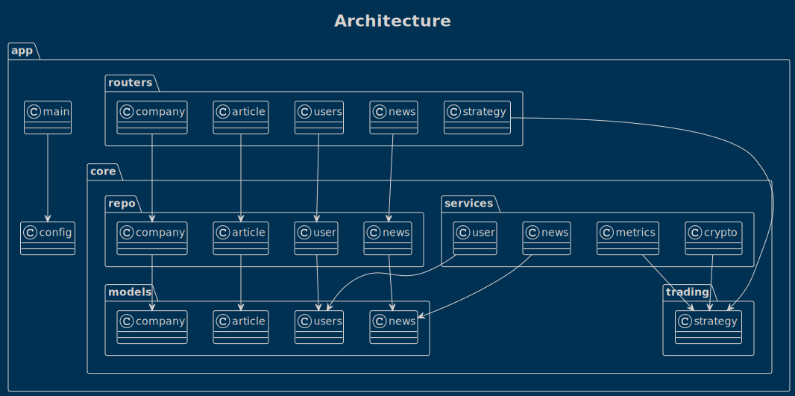
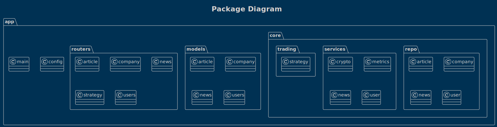
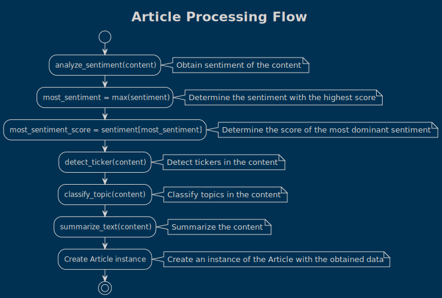
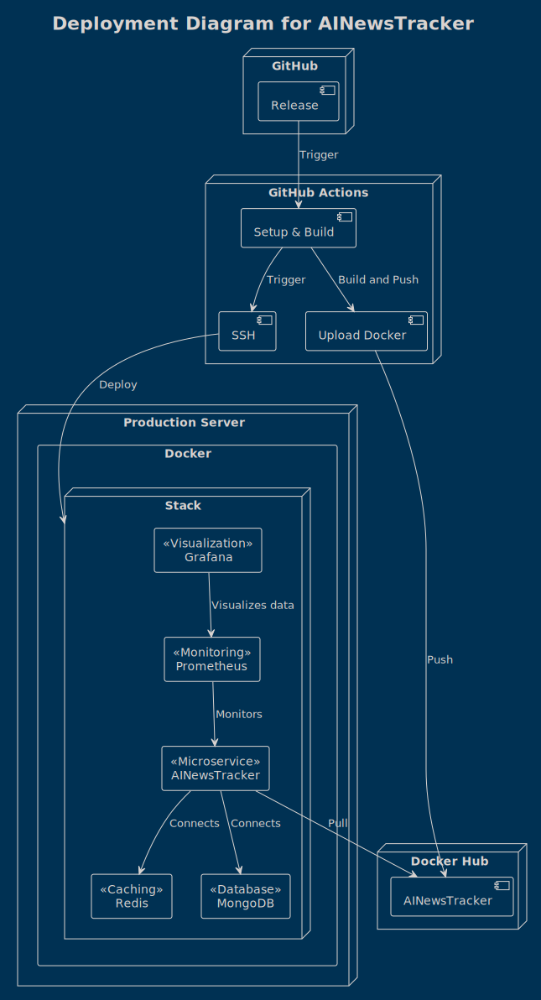

Diagrams
This page contains various diagrams illustrating the architecture, design, and workflow of the project.
App Structure Details Diagram

The App Structure Details Diagram shows the detailed structure of the application. It illustrates the interactions between classes, services, and repositories within the application, helping you understand the dependencies and relationships within the codebase.
{kind=link}
App Structure Diagram

The App Structure Diagram represents the overall structure of the application, giving an overview of the packages and classes. It's useful for getting a bird's eye view of the software's organization.
{kind=link}
Article Processing Flow Diagram

The Article Processing Flow Diagram is a flowchart detailing the steps for processing articles within the application. This includes sentiment analysis, ticker detection, topic classification, and text summarization, all critical for understanding and managing the news articles in the system.
{kind=link}
Deployment Diagram for AINewsTracker

The Deployment Diagram for AINewsTracker represents the deployment process for AINewsTracker, from code release to visualization of data in a production environment. It shows the services involved in the continuous delivery pipeline, making it an essential diagram for understanding how changes in the application are deployed and monitored.
{kind=link}
Fetch Feed Entries Flow Diagram
The Fetch Feed Entries Flow Diagram shows the process flow for fetching and processing RSS feed entries in our system. It goes from the retrieval of the RSS feed to storing the processed articles in the database, highlighting the steps and actors involved in this critical operation.
{kind=link}
Seeding Process Diagram
The Seeding Process Diagram illustrates the process of seeding data from an external API into the local database and optional CSV file. This diagram is essential for understanding how the system populates its data store.
{kind=link}
Sentiment Analysis Flow Diagram
The Sentiment Analysis Flow Diagram depicts the process of sentiment analysis in our system, a crucial component of the application that helps assess the sentiment or tone of the news articles. It walks through the steps from text tokenization to sentiment prediction.
{kind=link}
Trading Strategy Diagram
The Trading Strategy Diagram explains the algorithmic trading strategy used in our system based on the sentiment analysis of news articles. This diagram is vital for understanding how the application makes trading decisions.
{kind=link}